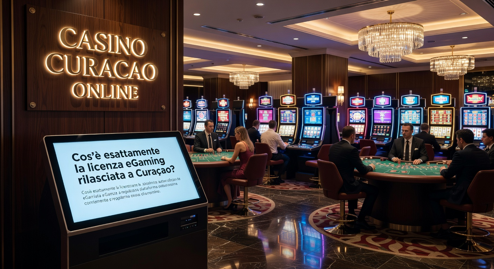
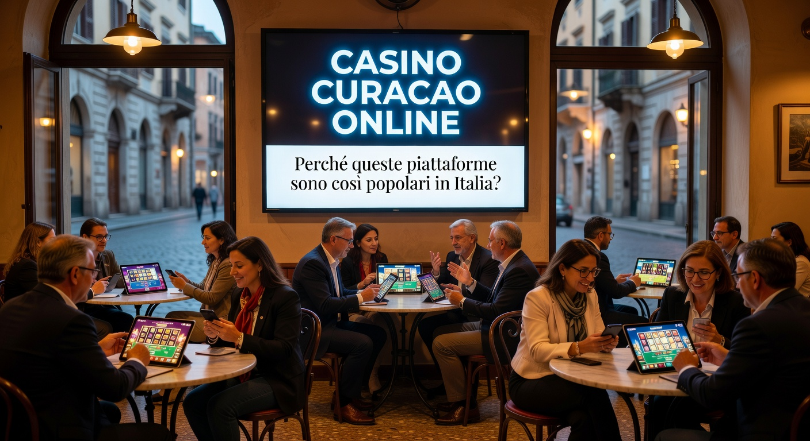
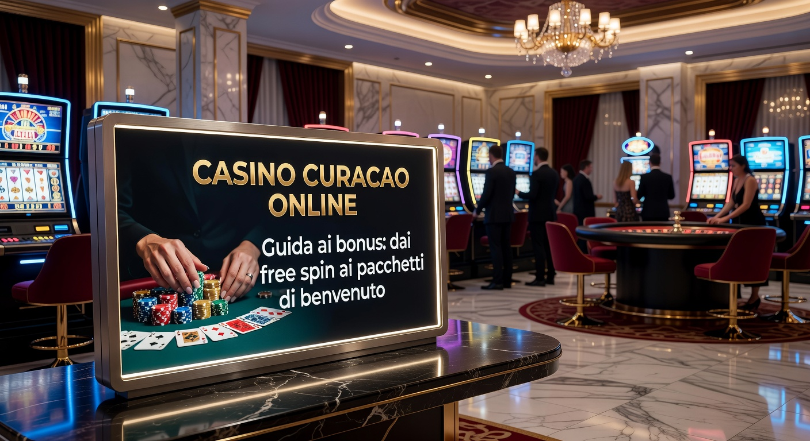

Casino Curacao online: Guida completa ai migliori siti eGaming del 2026
Il panorama del gioco d'azzardo digitale ha subito trasformazioni radicali negli ultimi anni, e nel 2026 la scelta di un casino curacao online rappresenta una delle opzioni più sofisticate per gli utenti italiani che cercano flessibilità e innovazione. Queste piattaforme, operanti sotto la giurisdizione dei Caraibi olandesi, hanno saputo evolversi tecnologicamente, offrendo standard di sicurezza che nulla hanno da invidiare ai circuiti europei tradizionali, ma con una libertà operativa superiore.
Millioner Casino
★★★★★ 5.0Bonus di benvenuto fino a €500
Roulettino Casino
★★★★★ 4.8Bonus 100% sul primo deposito
Wyns Casino
★★★★★ 4.7Bonus esclusivo fino a €1000
Kinbet Casino
★★★★★ 4.5200% bonus + 50 giri gratis
Dragonia Casino
★★★★★ 4.4Bonus benvenuto 150% fino a €300
Esplorare il mondo dei siti internazionali richiede però competenza tecnica e una conoscenza approfondita delle dinamiche di mercato. In questa guida analizzeremo come identificare un casino curacao online affidabile, quali sono le tecnologie di protezione dei dati implementate nel 2026 e come massimizzare i vantaggi derivanti dai bonus e dai programmi fedeltà esclusivi di questi operatori.
La crescita esponenziale di questo settore è dovuta principalmente alla capacità di adattamento alle nuove esigenze degli utenti, come l'integrazione nativa delle criptovalute e l'assenza di limiti di deposito troppo stringenti. Per chi cerca un'esperienza di alto livello, i casinò non aams deposito 10 euro rappresentano spesso il punto d'ingresso ideale per testare la qualità del servizio senza esporsi eccessivamente.
Classifica dei migliori casino Curacao online per giocatori italiani
La selezione delle piattaforme più performanti del 2026 non è casuale, ma deriva da mesi di test condotti dai nostri esperti. Abbiamo valutato non solo la generosità dei bonus, ma soprattutto la stabilità del software e la velocità delle transazioni in uscita. Un casino curacao online di qualità deve garantire un ambiente fluido, privo di lag tecnici durante le sessioni live e con un catalogo giochi costantemente aggiornato con le ultime uscite dei top provider mondiali.
Tra i nomi che si sono distinti maggiormente quest'anno, troviamo operatori che hanno investito pesantemente nell'intelligenza artificiale per personalizzare l'esperienza dell'utente. Questa tecnologia permette al sito di suggerire titoli in linea con i gusti del giocatore, migliorando sensibilmente il tempo trascorso sulla piattaforma. Di seguito, analizziamo nel dettaglio le tre eccellenze che dominano il mercato attuale.
Wild Tokyo - Eccellenza nel catalogo giochi
Wild Tokyo si conferma come un punto di riferimento per chi non vuole compromessi sulla varietà. Con oltre 8.000 titoli disponibili, questa piattaforma combina un design cyberpunk futuristico con una navigabilità impeccabile. Il punto di forza risiede nella collaborazione con oltre 100 fornitori di software, garantendo che ogni nuova slot machine sia disponibile in anteprima assoluta per i suoi iscritti.
Winshark - Il top per i bonus di benvenuto
Se la vostra priorità è il valore aggiunto del deposito iniziale, Winshark è la scelta obbligata. Il suo pacchetto di benvenuto è strutturato per premiare non solo il primo versamento, ma l'intera prima settimana di attività. La trasparenza dei termini e delle condizioni rende questo casino curacao online uno dei più onesti del settore, con requisiti di scommessa raggiungibili anche dai giocatori meno esperti.
Spinanga - Esperienza mobile e gamification
Spinanga ha rivoluzionato il concetto di gioco mobile nel 2026. La loro applicazione web progressiva (PWA) permette di accedere a tutte le funzionalità senza occupare spazio sul dispositivo, con una fluidità eccezionale su qualsiasi sistema operativo. Inoltre, il sistema di gamification integrato permette di accumulare monete virtuali scambiabili con bonus reali semplicemente partecipando a missioni giornaliere e tornei interni.
Cos'è esattamente la licenza eGaming rilasciata a Curaçao?

La licenza rilasciata dal Governo di Curaçao è storicamente una delle prime regolamentazioni nate per il gioco a distanza. Nel 2026, il quadro normativo è diventato molto più severo rispetto al passato, obbligando ogni casino curacao online a superare audit periodici sulla correttezza dell'RNG (Random Number Generator) e sulla solvibilità finanziaria dell'azienda operatrice. Non si tratta più di una licenza "facile", ma di un sigillo di garanzia internazionale.
Esistono diverse Master License (come Antillephone N.V. o Gaming Curacao) che supervisionano i sub-licenziatari. Questa struttura permette una gestione capillare delle dispute e assicura che il capitale dei giocatori sia tenuto in conti separati da quelli operativi della società. Comprendere questa distinzione è fondamentale per valutare la solidità di un casino curacao online prima di effettuare un deposito di grandi dimensioni.
Per approfondire la storia e l'evoluzione delle regolamentazioni internazionali, è utile consultare le risorse ufficiali sulle licenze di gioco di Curaçao su Wikipedia, dove vengono spiegati i passaggi legislativi che hanno portato all'attuale standard di sicurezza globale. Questa trasparenza è ciò che ha permesso a queste piattaforme di guadagnare la fiducia del mercato europeo.
Perché queste piattaforme sono così popolari in Italia?

Il successo di ogni casino curacao online in Italia nel 2026 è legato a una parola chiave: libertà. I giocatori italiani sono sempre più stanchi delle restrizioni burocratiche e dei limiti di puntata imposti dalle normative locali. Su questi siti, invece, è possibile trovare tavoli VIP con limiti molto alti e una varietà di giochi che spesso include varianti innovative non ancora approvate dai regolatori nazionali.
Un altro fattore determinante è la rapidità dei processi di verifica. Molti di questi portali utilizzano sistemi di "Fast KYC" che permettono di iniziare a giocare in pochi minuti, pur mantenendo standard elevati contro il riciclaggio di denaro. Inoltre, la possibilità di utilizzare il prelievo bitcoin casino rende queste piattaforme estremamente appetibili per la fascia di utenti più tecnologicamente avanzata, che desidera transazioni istantanee e private.
Inoltre, l'assistenza ai giocatori è spesso multilingua e attiva 24/7. Sapere di poter parlare con un operatore in italiano in qualsiasi momento, anche su un portale con base nei Caraibi, elimina ogni barriera psicologica. Il casino curacao online moderno ha capito che la localizzazione è il segreto per fidelizzare il pubblico mediterraneo.
La sicurezza nei casino Curacao online: protocolli e crittografia
Quando parliamo di un casino curacao online nel 2026, non possiamo prescindere dall'analisi dell'infrastruttura di sicurezza. La protezione dei dati sensibili e delle transazioni finanziarie è garantita dall'uso di protocolli SSL/TLS di ultima generazione, con chiavi di crittografia a 256 bit. Questo livello di protezione è lo stesso utilizzato dai principali istituti bancari mondiali per le loro operazioni di home banking.
Oltre alla crittografia dei dati in transito, i migliori operatori implementano firewall avanzati e sistemi di rilevamento delle intrusioni basati su algoritmi di machine learning. Questo serve a prevenire attacchi informatici e a garantire che le sessioni di gioco non vengano interrotte o manipolate da soggetti esterni. La sicurezza è un pilastro fondamentale che permette a ogni casino curacao online di mantenere la propria licenza operativa.
Un altro aspetto cruciale è la protezione del saldo degli utenti. Molte piattaforme utilizzano ora smart contract su blockchain per automatizzare i pagamenti, assicurando che una vincita venga elaborata non appena vengono soddisfatti i requisiti, senza possibilità di intervento umano discrezionale. Questo aumenta drasticamente il livello di fiducia tra il giocatore e il casino curacao online scelto.
Criteri rigorosi per la nostra selezione editoriale
Non tutti i siti che dichiarano di avere una licenza caraibica meritano la vostra attenzione. Il nostro processo di revisione per ogni casino curacao online è meticoloso e non lascia nulla al caso. Testiamo personalmente ogni piattaforma per un periodo minimo di 30 giorni, depositando fondi reali e testando i tempi di risposta dell'assistenza clienti e la facilità di prelievo.
Valutiamo l'usabilità dell'interfaccia, verificando che sia ottimizzata non solo per desktop ma soprattutto per i dispositivi mobili, che oggi rappresentano oltre l'80% del traffico totale. Un casino curacao online che non offre un'esperienza mobile fluida viene automaticamente scartato dalle nostre classifiche, indipendentemente dai bonus offerti.
Controlliamo anche la reputazione storica del gruppo che gestisce il sito. La longevità nel settore è spesso sinonimo di affidabilità. Se un operatore ha gestito con successo diversi brand per anni senza reclami significativi, è molto probabile che il suo nuovo casino curacao online sia altrettanto sicuro e professionale.
Varietà dei fornitori di software
Un catalogo giochi di qualità deve essere profondo e variegato. Analizziamo se il casino curacao online collabora con i giganti del settore come NetEnt, Microgaming e Pragmatic Play, ma cerchiamo anche la presenza di studi emergenti che offrono meccaniche di gioco innovative. La presenza di giochi "Provably Fair" è un ulteriore punto a favore per la trasparenza.
Efficienza dell'assistenza clienti
In caso di problemi tecnici o dubbi sui bonus, il supporto deve essere impeccabile. Verifichiamo la presenza di una Live Chat disponibile in tempo reale e la competenza degli operatori. Un casino curacao online d'eccellenza deve fornire risposte esaustive in meno di 5 minuti, preferibilmente in lingua italiana, per evitare malintesi dovuti alla barriera linguistica.
Guida ai bonus: dai free spin ai pacchetti di benvenuto

I bonus sono senza dubbio l'attrattiva principale di un casino curacao online. Nel 2026, le offerte sono diventate molto più articolate dei semplici raddoppi del deposito. Troviamo bonus "Sticky" e "Non-Sticky", pacchetti di giri gratuiti su slot selezionate e incentivi specifici per chi utilizza le criptovalute. Questa varietà permette a ogni tipologia di giocatore di trovare la promozione più adatta al proprio stile.
Il segreto per sfruttare al meglio queste offerte è leggere attentamente il "wagering requirement" o requisito di scommessa. Un casino curacao online onesto manterrà questo valore tra il 30x e il 40x, rendendo concretamente possibile trasformare il bonus in saldo reale prelevabile. Diffidate sempre di promozioni apparentemente enormi ma con requisiti superiori a 60x, poiché sono quasi impossibili da completare.
È inoltre importante verificare la contribuzione dei diversi giochi al raggiungimento del volume di scommessa. Solitamente le slot contribuiscono al 100%, mentre i giochi da tavolo e il casinò live possono avere percentuali molto più basse. Ogni casino curacao online ha regole specifiche in merito, che devono essere chiaramente indicate nella pagina dei termini dell'offerta.
Bonus senza deposito
Sebbene più rari, alcuni operatori offrono ancora un piccolo incentivo senza richiedere un versamento iniziale. Questo tipo di bonus è ideale per testare l'interfaccia di un nuovo casino curacao online senza rischi. Solitamente si tratta di 10-20 giri gratuiti o di una piccola somma (5-10 euro) accreditata al momento della verifica dell'account.
Programmi VIP e cashback settimanale
Per i giocatori regolari, il vero valore risiede nei programmi fedeltà. Un casino curacao online di alto livello offre un sistema a livelli che premia la costanza con rimborsi sulle perdite (cashback), limiti di prelievo più alti e un account manager dedicato. Il cashback settimanale è particolarmente apprezzato perché permette di recuperare una percentuale delle giocate sfortunate, offrendo una "seconda chance" automatica.
Consigliati dagli esperti: I brand da non perdere nel 2026
Nella giungla delle offerte digitali, abbiamo selezionato alcuni nomi che stanno ridefinendo gli standard del settore. Se state cercando un casino curacao online che unisca affidabilità e innovazione, queste sono le opzioni più solide al momento:
- Millioner: Un brand che punta tutto sull'eleganza e su un'esperienza premium. Potete scoprire i loro tavoli esclusivi visitando Millioner, dove il programma VIP è tra i più remunerativi dell'anno.
- Roulettino: Come suggerisce il nome, è il paradiso per gli amanti dei giochi da tavolo e della roulette live. L'interfaccia è pulita e le transazioni sono velocissime. Registrati su Roulettino per accedere a tornei giornalieri.
- Wyns: Questo casino curacao online si distingue per la sua semplicità d'uso e per un servizio clienti impeccabile. Per maggiori dettagli sull'offerta di benvenuto, consulta Wyns.
- Kinbet: Perfetto per chi ama alternare le scommesse sportive al casinò tradizionale. La piattaforma è integrata e permette di usare un unico saldo per tutto. Inizia a giocare su Kinbet oggi stesso.
- Dragonia: Un'ambientazione fantasy unica che trasforma ogni puntata in un'avventura. La gamification qui raggiunge livelli altissimi. Esplora il mondo di Dragonia e sblocca i suoi tesori.
- Divaspin: Focalizzato su una vasta selezione di slot machine e grafiche accattivanti, è ideale per sessioni di gioco veloci e divertenti. Scopri le novità di Divaspin.
Metodi di pagamento: la rivoluzione delle criptovalute
Il 2026 ha segnato il definitivo sorpasso delle criptovalute sui metodi di pagamento tradizionali nel settore del gioco. Ogni casino curacao online moderno supporta ormai non solo Bitcoin, ma una vasta gamma di Altcoin come Ethereum, Tether (USDT), Litecoin e Solana. Il vantaggio principale è l'abbattimento totale dei tempi di attesa: un prelievo in crypto viene spesso confermato sulla blockchain in pochi minuti.
Oltre alla velocità, le criptovalute offrono un livello di privacy superiore, poiché non richiedono la condivisione di dati bancari sensibili direttamente con il sito. Molti utenti scelgono il pagamenti tether casino per la stabilità del valore della moneta, evitando le fluttuazioni tipiche del mercato crypto pur godendo della rapidità tecnologica della blockchain. Questo equilibrio è ciò che rende un casino curacao online così attraente per i risparmiatori oculati.
Tuttavia, chi preferisce i metodi classici non viene escluso. Carte di credito, bonifici istantanei e portafogli elettronici sono sempre presenti. La differenza nel 2026 è l'integrazione di sistemi come Apple Pay e Google Pay, che permettono depositi istantanei con un semplice tocco del sensore biometrico sullo smartphone. La flessibilità finanziaria è un pilastro di ogni casino curacao online che si rispetti.
Portafogli elettronici e carte bancarie
Metodi come Revolut, Wise e i classici portafogli elettronici continuano a essere molto popolari per la loro facilità d'uso. Un casino curacao online affidabile non applicherà commissioni sui depositi effettuati con questi strumenti. I tempi di prelievo si sono ridotti drasticamente, passando dai vecchi 3-5 giorni lavorativi a un massimo di 24 ore nella maggior parte dei casi.
Bitcoin e Altcoin nel gioco d'azzardo
L'uso di Bitcoin permette anche l'accesso a giochi esclusivi chiamati "Crypto Games", che hanno un margine della casa molto basso (spesso intorno all'1%). Questo tipo di offerta è tipica di un casino curacao online che vuole distinguersi dalla massa, offrendo un valore matematico migliore per il giocatore rispetto ai classici titoli da bar o dei monopoli di stato.
| Metodo | Tempo Deposito | Tempo Prelievo | Privacy |
|---|---|---|---|
| Criptovalute | Istantaneo | 5-15 minuti | Alta |
| E-wallets | Istantaneo | 0-12 ore | Media |
| Carte Credito | Istantaneo | 1-3 giorni | Bassa |
Aspetti legali e fiscali per chi gioca dall'Italia
Giocare su un casino curacao online dall'Italia è una pratica comune, ma è fondamentale conoscere gli aspetti legali e fiscali per operare in totale serenità. Tecnicamente, questi siti operano in una zona grigia legislativa, poiché non possiedono una licenza locale ma sono regolarmente autorizzati a livello internazionale. Nel 2026, la giurisprudenza europea tende a favorire la libera prestazione di servizi, rendendo l'accesso a queste piattaforme una scelta individuale del consumatore.
Dal punto di vista fiscale, è bene ricordare che le vincite ottenute su un casino curacao online non sono soggette a tassazione alla fonte da parte dello stato italiano, a differenza dei siti nazionali. Questo significa che, secondo le normative vigenti, il contribuente dovrebbe dichiarare tali somme nella propria dichiarazione dei redditi annuale sotto la voce "altri redditi". Consultare un commercialista esperto in redditi esteri è sempre la mossa più saggia per gestire somme importanti.
Molti giocatori preferiscono i casinò non aams deposito 20 euro proprio perché permettono una gestione più autonoma delle proprie finanze, senza che ogni minima transazione venga monitorata o bloccata preventivamente. La responsabilità fiscale ricade sull'utente, il quale gode in cambio di quote migliori e bonus molto più elevati rispetto alla concorrenza locale.
Pro e contro rispetto ai siti con licenza ADM
Scegliere un casino curacao online comporta una serie di vantaggi e svantaggi che vanno pesati attentamente. Tra i vantaggi principali troviamo l'assenza di autoesclusione trasversale (che a volte blocca ingiustamente i giocatori), limiti di puntata molto più alti e una velocità di registrazione imbattibile. Inoltre, la varietà di giochi live e game show disponibili è spesso superiore, includendo titoli non ancora certificati in Italia.
D'altro canto, giocare su un casino curacao online significa rinunciare alla protezione diretta dell'ente regolatore nazionale in caso di controversie. Sebbene le Master License di Curaçao intervengano nelle dispute, il processo può essere più lungo e richiedere una comunicazione in lingua inglese. Per questo motivo, è vitale scegliere solo siti con una reputazione impeccabile e anni di onorato servizio.
Un altro punto a favore dei siti internazionali è la generosità delle promozioni. Un casino curacao online ha costi di gestione e tassazione inferiori rispetto a un operatore italiano, e può quindi permettersi di "restituire" una fetta più grande dei proventi ai giocatori sotto forma di bonus, tornei con montepremi milionari e cashback elevati.
L'evoluzione tecnologica dei giochi nel 2026
I giochi che trovate oggi in un casino curacao online sono veri e propri capolavori di ingegneria informatica. La realtà aumentata (AR) e la realtà virtuale (VR) sono diventate standard nei tavoli live, permettendo ai giocatori di immergersi in un ambiente di casinò tridimensionale direttamente dal proprio salotto. Questa immersività ha cambiato radicalmente la percezione del gioco a distanza.
Anche la meccanica delle slot è cambiata. Oltre ai classici rulli, il casino curacao online moderno propone giochi "cluster pay" e meccaniche "Infinity Reels" che offrono migliaia di modi per vincere. L'uso dell'intelligenza artificiale permette inoltre di creare livelli di difficoltà dinamici nei giochi di abilità, rendendo l'esperienza sempre stimolante e mai ripetitiva.
Per chi è interessato alla sicurezza informatica e al futuro del gioco, è consigliabile leggere i report tecnici di Forbes o altre testate di business che spesso analizzano come il settore iGaming stia guidando l'innovazione tecnologica globale. Un casino curacao online è spesso il primo luogo dove vengono testate queste nuove tecnologie prima di approdare nel mercato di massa.
Consigli per un approccio al gioco responsabile
Nonostante l'intrattenimento offerto da un casino curacao online sia di altissimo livello, la sicurezza personale deve rimanere la priorità. Il gioco responsabile non è solo uno slogan, ma una pratica quotidiana che ogni utente dovrebbe adottare. Stabilite sempre un budget massimo giornaliero o mensile e, soprattutto, non cercate mai di recuperare le perdite aumentando le puntate: è il modo più rapido per perdere il controllo.
Ogni casino curacao online serio mette a disposizione strumenti di auto-limitazione. Potete impostare limiti di deposito, limiti di perdita o periodi di "cool-off" direttamente dal pannello di controllo del vostro account. Utilizzare questi strumenti preventivamente è il segno di un giocatore maturo e consapevole, che vede il casinò come una forma di svago e non come una fonte di reddito.
Inoltre, è fondamentale monitorare il tempo trascorso sulla piattaforma. Sessioni troppo lunghe possono offuscare la capacità di giudizio. Molti esperti consigliano di fare una pausa di 15 minuti ogni ora di gioco. Ricordate che il casino curacao online è lì per divertirvi; se smette di essere un piacere, è il momento di fermarsi e cercare supporto se necessario.
Analisi della trasparenza: RTP e RNG
La fiducia in un casino curacao online si basa sulla certezza che i giochi siano onesti. Questo è garantito da due parametri tecnici: l'RTP (Return to Player) e l'RNG (Random Number Generator). L'RTP indica la percentuale teorica di denaro che un gioco restituisce ai giocatori nel lungo periodo. In un sito di qualità, questo valore deve essere pubblico e verificato da laboratori indipendenti come iTech Labs o eCOGRA.
L'RNG è invece l'algoritmo che garantisce l'assoluta casualità di ogni estrazione, che si tratti di un giro di slot o di una carta distribuita al blackjack. Un casino curacao online certificato non ha modo di manipolare questi risultati, poiché il software risiede sui server del fornitore (es. NetEnt) e non su quelli del casinò stesso. Questa separazione tecnica è la massima garanzia di imparzialità per il consumatore nel 2026.
Per gli utenti più esperti, i casino con prelievo crypto casino offrono spesso giochi "Provably Fair". Questa tecnologia permette al giocatore di verificare manualmente la correttezza di ogni singola giocata tramite algoritmi crittografici, eliminando ogni dubbio sulla trasparenza del casino curacao online scelto.
Domande Frequenti sui casino Curacao online
In questa sezione rispondiamo ai dubbi più comuni che i nostri lettori ci pongono riguardo alla scelta e all'utilizzo di un casino curacao online nel contesto del mercato 2026.
È legale giocare in un casino Curacao online dall'Italia?
Sì, non esiste alcuna legge che proibisca a un cittadino italiano di iscriversi e giocare su piattaforme con licenza internazionale. La responsabilità della conformità ricade sull'operatore, mentre il giocatore deve solo assicurarsi di gestire correttamente gli aspetti fiscali delle proprie vincite.
Come posso essere sicuro che il casinò mi pagherà?
Scegliendo un casino curacao online presente nelle nostre classifiche, avrete la garanzia di test effettuati con prelievi reali. Verificate sempre la presenza del logo della licenza in fondo alla pagina e leggete le recensioni degli altri utenti per confermare la puntualità dei pagamenti.
Quali sono i vantaggi delle criptovalute rispetto alle carte di credito?
Le criptovalute offrono prelievi quasi istantanei, maggiore privacy e spesso bonus più generosi. Inoltre, non sono soggette ai blocchi che alcune banche italiane applicano alle transazioni verso siti di gioco d'azzardo internazionali, garantendo che i vostri fondi siano sempre disponibili.
Posso giocare su un casino curacao online dal mio smartphone?
Assolutamente sì. Nel 2026, ogni casino curacao online è sviluppato con un approccio "mobile-first". Che sia tramite una app dedicata o una versione browser ottimizzata, potrete godere di tutti i giochi e le funzionalità con la stessa qualità del desktop.
Cosa devo fare se ho un problema con un prelievo?
Il primo passo è contattare la Live Chat del casino curacao online. Spesso si tratta di una semplice verifica documentale mancante. Se il supporto non risolve il problema, potete rivolgervi all'ente che ha rilasciato la licenza (es. Antillephone) aprendo un ticket ufficiale di disputa.
Conclusioni sulla scelta della piattaforma ideale
Scegliere il miglior casino curacao online nel 2026 richiede equilibrio tra entusiasmo e prudenza. Le opportunità offerte da questi siti sono innegabili: bonus enormi, tecnologie all'avanguardia e una libertà d'azione che i circuiti tradizionali non possono eguagliare. Tuttavia, la sicurezza deve sempre guidare le vostre decisioni. Affidarsi a portali certificati e seguire i consigli degli esperti è il modo migliore per trasformare il gioco in un'esperienza positiva e gratificante.
Ricordate che il panorama digitale è in continua evoluzione. Un casino curacao online che oggi è al top potrebbe essere superato domani da un nuovo operatore più innovativo. Restare informati, leggere le recensioni aggiornate e testare le piattaforme con piccoli depositi iniziali sono le strategie vincenti per ogni giocatore nel 2026. Che preferiate le slot, i tavoli live o le scommesse in criptovalute, il mondo delle licenze di Curaçao ha sicuramente l'opzione perfetta per le vostre esigenze.
In definitiva, il casino curacao online rappresenta la nuova frontiera del gioco consapevole e tecnologicamente avanzato. Sfruttate i vantaggi offerti, giocate sempre con moderazione e godetevi lo spettacolo del gambling moderno in totale sicurezza. Per iniziare con il piede giusto, potete esplorare i casinò non aams deposito 5 euro e scoprire quanto sia facile accedere a un intrattenimento di classe mondiale.

Scrittore e ricercatore nel campo del turismo e delle attività outdoor in Italia.